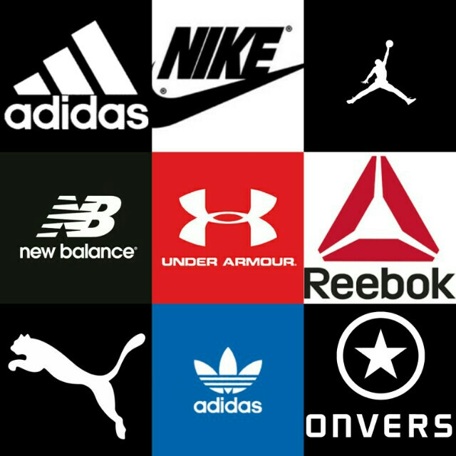
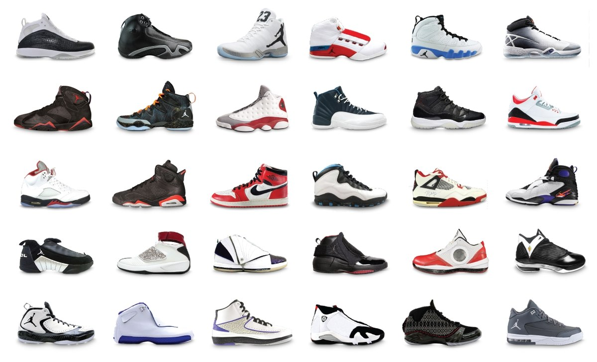
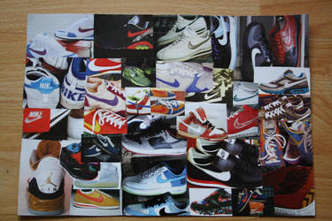
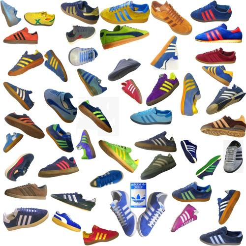
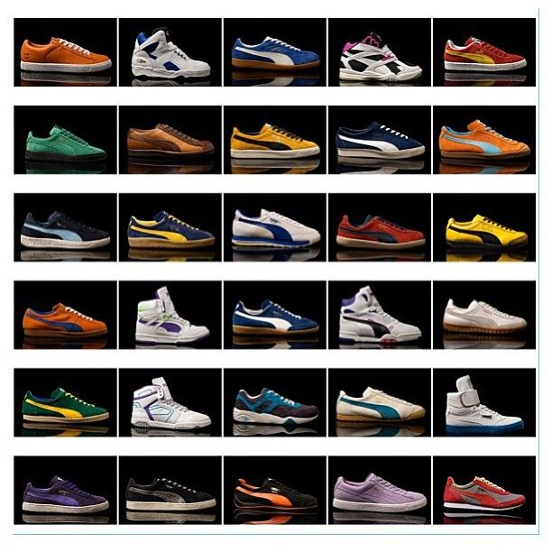

<!DOCTYPE html>
<html>
  <head>
    <meta charset="utf-8">
    <meta name="viewport" content="width=device-width">
    <title>repl.it</title>
    <link href="style.css" rel="stylesheet" type="text/css" />
  </head>
  <body>
    <script src="script.js"></script>
  </body>
</html>

<html>
  <head> 
    <h1><center><font color="black">The Most Popular Kicks</center></font>  
    <div> 
      <center></center>
  </div> 
   
    <link href="style.css" rel="stylesheet" type="text/css" /> 
    
    
  </head>
  <body> 
    
      <body bgcolor = gold>   
<font color="red">
 <h2><center> <p style="border:3px; border-style:solid; border-color:black; padding: 1em;"> TOP BRAND SELLING SHOES</center></h2> </p></font>
 <div>
   <font color="black">
 <h3><center><u> Jordan</u></h3>  
 <center><p><a href="https://air.jordan.com"></a></p></center>
 </div>
 <div>
 <center><body><font size="4"> Air Jordan is a brand of basketball shoes, athletic, casual, and style clothing produced by Nike. It was created for former professional basketball player Michael Jordan. The original Air Jordan sneakers were produced exclusively for Michael Jordan in early 1984, and released to the public in late 1984. The shoes were designed for Nike by Peter Moore, Tinker Hatfield, and Bruce Kilgore.</body></center></font>
 </div> 
 <div> 
 <h3><center><u> Nike</u></center></h3> 
 <center><p><a href="https://www.nike.com"></a></p></center>
 </div>
 <div>
 <center><body><font size="4">The company was founded on January 25, 1964, as Blue Ribbon Sports, by Bill Bowerman and Phil Knight, and officially became Nike, Inc. on May 30, 1971. The company takes its name from Nike, the Greek goddess of victory. Nike markets its products under its own brand, as well as Nike Golf, Nike Pro,  Air Jordan,  Air Force 1, Air Max, Foamposite, Nike Skateboarding, and subsidiaries including Brand Jordan, Hurley International and Converse.</body></center></font>
 </div> 
 <div>  
 <h3><center><u> Adidas</u></h3>  
 <center><p><a href="https://www.adidas.com"></a></p></center>
 </div>
 <div>
<center><body><font size="4"> The company was started by Adolf Dassler in his mother's house. He was joined by his elder brother Rudolf in 1924 under the name Dassler Brothers Shoe Factory. Dassler assisted in the development of spiked running shoes  for multiple athletic events. To enhance the quality of spiked athletic footwear, he transitioned from a previous model of heavy metal spikes to utilising canvas and rubber. Dassler persuaded U.S. sprinter Jesse Owens to use his handmade spikes at the 1936 Summer Olympics. In 1949, following a breakdown in the relationship between the brothers, Adolf created Adidas, and Rudolf established Puma, which became Adidas' business rival.</body></center></font>
  </div>
  <div>
    <h3><center><u> Pumas</u></h3>  
 <center><p><a href="https://www.puma.com"></a></p></center>
 </div>
 <div>
<center><body><font size="4"> TPuma SE, branded as Puma, is a German multinational company that designs and manufactures athletic and casual footwear, apparel and accessories, which is headquartered in Herzogenaurach, Bavaria, Germany. PUMA is the third largest sportswear manufacturer in the world. The company was founded in 1948 by Rudolf Dassler. In 1924, Rudolf and his brother Adolf Dassler had jointly formed the company Gebrüder Dassler Schuhfabrik (Dassler Brothers Shoe Factory). The relationship between the two brothers deteriorated until the two agreed to split in 1948, forming two separate entities, Adidas and Puma. Both companies are currently based in Herzogenaurach, Germany.</body></center></font>
  </div>
<div>
  <font color="red">
  <h3><center> <p style="border:3px; border-style:solid; border-color:black; padding: 1em;">THE MOST POPULAR SHOE OF ALL! </center></h3> </font>
   <center> <body> <font size="4">The past decade of sneaker culture has been all about making a statement. But of all these popular brands that continue to make their fair share of noise Nike knows how to create products that live up to their considerable hype. It has more icons in its back catalogue than any other sneaker brand. Still the most recognisable. Still the most wanted. Still the ones to beat!<//body></center></font></p>
</div>
<h3><center> <p style="border:3px; border-style:solid; border-color:black; padding: 1em;"> <a href="index.html"> Home Page </a></h3>
  </body>
</html>